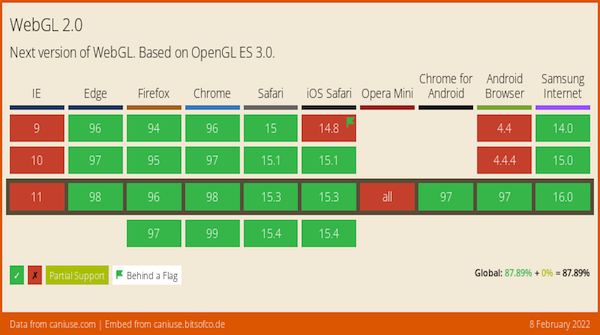

February@w3c: W3C Chapter events #a11y, W3C+Dev Track@WebConf, etc. https://www.w3.org/participate/eventscal.html
10 Feb.: New deadline to submit your work to the Web #developer and #W3C track @TheWebConf. Read the #CfP: https://www2022.thewebconf.org/cfp/web-dev-w3c/
https://twitter.com/w3cdevs/status/148890688498795725122 Feb.: In conjunction with @PerthA11yCamp, the Australia Western Region #W3Chapter organizes the #Perth Web #Accessibility Camp [in person and virtual] w/ speakers @jspellman, Judy Brewer and @BluesChick5 #PWAC2022 #a11y 🇦🇺
https://chapters.w3.org/australia-western/event/perth-web-accessibility-camp/
https://twitter.com/w3cdevs/status/1488906889459023873Hear the story and what the future holds for #AudioBooks! @wendy_a_reid, co-chair of @w3cpublishing, presents "W3C AudioBooks: building the new iteration of audiobooks"
https://youtu.be/wqnSLnYfiXg
This presentation was given at the 1st edition of @AUDIOLIVEMTP: https://audio-live.fr/intervention-wendy-reid/
https://twitter.com/w3cdevs/status/1489586722379907077The story begins in 1877 with the invention of the phonograph, and continues through the computer age of the 1990s, with devices getting smaller and smaller, storage sizes increasing dramatically, and data connections becoming more readily available.
https://twitter.com/w3cdevs/status/1489586731909328897With constant technological developments, new trends are arising: computer-generated narration, #AI, integrated supplemental content, #MachineLearning, increased #accessibility, etc.
https://twitter.com/w3cdevs/status/1489586735445127179Chartered until end of 2022, @w3cpublishing maintains the @w3c #AudioBooks specification: https://www.w3.org/TR/audiobooks/
https://twitter.com/w3cdevs/status/1489586738171367433📢The Design Tokens #CommunityGroup editors request the community’s feedback on the specifics of the #color and #animation modules.
Please reply to their short survey by 21st Feb.! https://docs.google.com/forms/d/e/1FAIpQLScEJlynVtWAHmnU6uNND9SS2IE-7cgxAkwUh0SYhenV_uYCSg/closedform https://twitter.com/w3c/status/1489757815241588741
Learn more about the @w3c Design Tokens #CommunityGroup: https://twitter.com/w3cdevs/status/1441345167881998338
https://twitter.com/w3cdevs/status/149063719877701222922 Feb.: DID conference Korea 2022 - online #decentralized #identity https://www.eventbrite.com/e/did-conference-korea-2022-tickets-262517044547
https://twitter.com/w3cdevs/status/1491320169012297731Congratulations to @thekhronosgroup in reaching this broad cross-browser support for #WebGL2! https://twitter.com/WebGL/status/1491411568189394946
With WebGL2 available on all major modern #browsers, Web #developers can rely with confidence on access to its improved feature set for #3D graphics: https://caniuse.com/webgl2
https://twitter.com/w3cdevs/status/1491418754512998400Meanwhile, the @w3c #WebGPU #WorkingGroup is building the next generation of GPU primitives on top of @thekhronosgroup work (esp. #SPIRV) to make GPU even more useful (for graphics and many new computing capabilities that rely on GPU for #parallelization) https://twitter.com/w3cdevs/status/1394635172247703552
https://twitter.com/w3cdevs/status/1491418761513304080#CSS Color Adjustment Module Level 1 has reached the @w3c #CandidateRecommendation status: #timetoimplement!
https://www.w3.org/TR/2022/CR-css-color-adjust-1-20220210/ https://twitter.com/w3c/status/1491780071668994053
With the "prefers-color-scheme", "prefers-contrast", and "forced-colors" features for media queries, this #CSS module allows color scheme negotiation between the author and the user
https://twitter.com/w3cdevs/status/1491792005659201544Typically, "prefers-color-scheme" is used to detect if the user has requested a light or dark color theme.
Watch how it works by watching @soMelanieSaid's 🎬talk at the #W3CDevMeetup in 2019
https://www.w3.org/2019/09/Meetup/speaker-melanie.html
https://twitter.com/w3cdevs/status/1491792011707383828Today's published module improves #accessibility and #developers can find out if #a11y features, such as high-contrast mode, are in force and cooperate by adjusting the style
https://twitter.com/w3cdevs/status/1491792018162393094Note that the "prefers-color-scheme" media query is well supported in modern Web browsers

https://twitter.com/w3cdevs/status/1491792015486451714The @csswg invites implementers to track open issues at https://github.com/w3c/csswg-drafts/labels/css-color-adjust-1
https://twitter.com/w3cdevs/status/1491792020649611270The #WebRTC #WorkingGroup published the "MediaStreamTrack Insertable Media Processing using Streams" #timetogiveinput and 🧵👇
https://www.w3.org/TR/2022/WD-mediacapture-transform-20220210/ https://twitter.com/w3c/status/1491780073002872832
This #JavaScript #API allows to process raw video, either before it gets encoded or after it gets decoded, e.g. to add #effects such as background blur to real-time #video.

https://twitter.com/w3cdevs/status/1491820039871291392It uses the notion of video frames developed in #WebCodecs to expose the bytes that a video processing program would operate on.
https://twitter.com/w3cdevs/status/1453737951578312713
https://twitter.com/w3cdevs/status/1491820047114948611#MachineLearning models are often used in this context, so special efforts are being put in figuring out what is needed to integrate #WebNN in this pipeline with maximal #performance.
https://github.com/webmachinelearning/webnn/issues/226#issuecomment-1004606825
https://twitter.com/w3cdevs/status/1407401080837840900
https://twitter.com/w3cdevs/status/1491820053016322055An earlier version of the #API is available in #Chromium https://chromestatus.com/feature/5499415634640896 with a demo at https://webrtc.github.io/samples/src/content/insertable-streams/video-processing/
https://twitter.com/w3cdevs/status/1491820050508038144This also ties to the conversation about minimizing memory copies (in general, and for media processing in particular).
https://twitter.com/w3cdevs/status/1333798094228520972
https://twitter.com/w3cdevs/status/1491820055826415616So, still quite a bit of work to make this all fit together, but this is an important step to enable #RealTime video processing capabilities on the Web Platform.
Head to the #GitHub repo if you want to contribute!
https://github.com/w3c/mediacapture-transform
https://twitter.com/w3cdevs/status/1491820060930981898Insertable Streams uses the #WHATWG @streamsstandard as a way to process video frames sequentially, while allowing potentially for optimized memory and processing semantics.
See this proposal to amend Streams to make them fit the need of raw video: https://github.com/whatwg/streams/blob/main/streams-for-raw-video-explainer.md
https://twitter.com/w3cdevs/status/1491820058561105922We are seeking prior art related to digital #audio, digital #imaging, and #multimedia networking technology from the mid-2000s. More details in: https://www.w3.org/2021/08/secondscreen-pag/cfpa-update.html Deadline is 31 March 2022. https://twitter.com/w3c/status/1493550559747522565
https://twitter.com/w3cdevs/status/1493565100019617799Please provide feedback and raise issues before 17 April 2022 https://github.com/w3c/csswg-drafts/issues?q=label%3Acss-conditional-4
Compared to #CSS level 3, this level 4 adds extensions to the '@supports' rule to allow testing for supported selectors https://www.w3.org/TR/2022/CR-css-conditional-4-20220217/ #timetoimplement https://twitter.com/w3c/status/1494231299111931904
https://twitter.com/w3cdevs/status/1494264420951855106